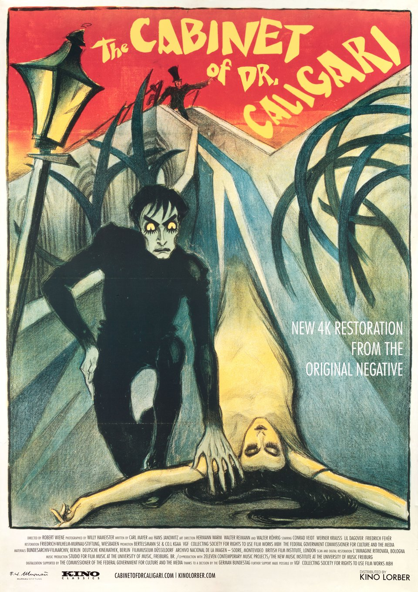

Seven Samurai
Somehow down-to-earth yet stunningly epic, this film captivated me. It's as uplifting as it is tragic - a tale of idealism in a cynical world.
The Cabinent of Dr. Caligari
Striking visuals that transcend the limitations of its time, with an eerie psychological horror underlying it. It's a classic for a reason.